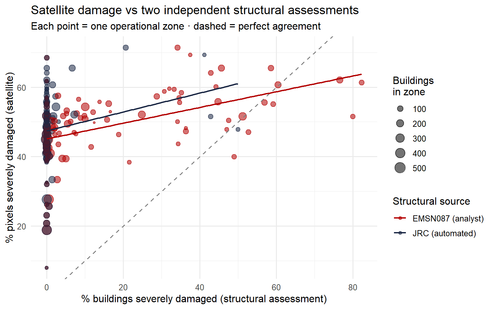
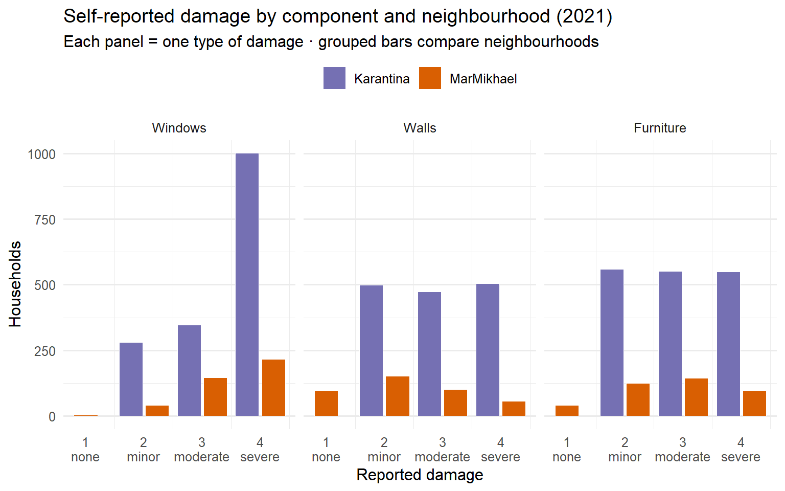
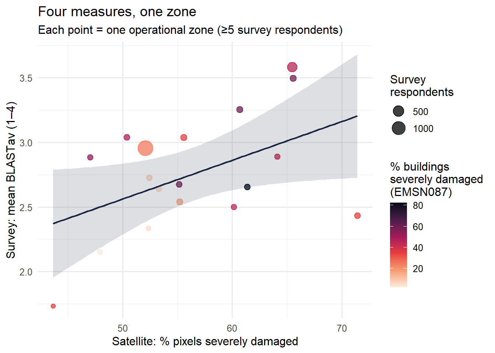
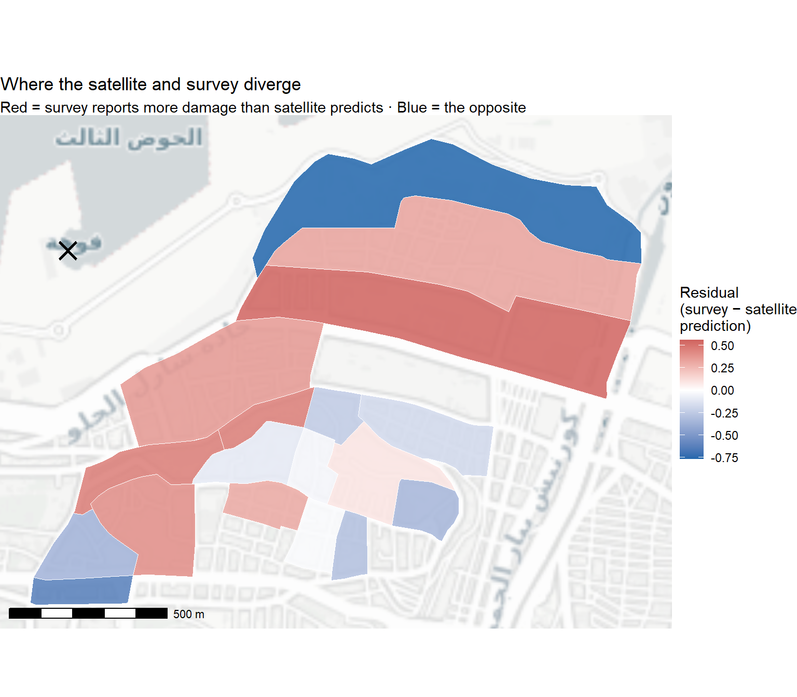

library(here) # project-relative file paths
library(sf) # vector spatial data
library(terra) # only if we need raster ops; light usage here
library(tidyverse) # data wrangling + ggplot2
library(readxl) # read .xlsx survey file
library(tmap) # interactive thematic mapping
library(ggspatial) # scale bar, north arrow, basemap tiles
library(ggrepel) # non-overlapping map labels
library(classInt) # break classification for choropleths
library(viridis) # accessible palettes
library(knitr) # tablesPart 2 · Satellites vs. surveys
Lab Part 2 of 2
Learning objectives
By the end of Part 2 you will be able to:
- Explain why a satellite-derived damage measure needs to be validated against other sources, and what “validation” does and doesn’t mean here
- Load two building-level damage assessments (Copernicus EMSN087 photointerpretation and the JRC automated pipeline) and join them spatially to the operational zones from Part 1
- Load a household survey of self-reported blast damage and aggregate it to the same zones
- Compute correlations between four independent damage measures (satellite, two structural, survey) and visualise where they agree and disagree
- Articulate why the measures diverge in particular places — and what those divergences tell us about using satellites for humanitarian response
2.1 Why validate?
Part 1 left us with a single number per operational zone: pct_severe_adj, the share of ~0.5 m pixels a Random Forest classified as severely damaged. It is a plausible damage measure — the map looks right, the distance-decay curve is clean — but plausibility isn’t validation. How do we know the satellite is actually capturing what happened on the ground?
The honest answer is that we never fully do. But we can triangulate: if independent damage measures agree in a given zone, our confidence rises; where they disagree, the disagreement itself is informative. In this lab we’ll compare the satellite measure from Part 1 against three other sources:
| Source | What it measures | Unit | When |
|---|---|---|---|
| Satellite (Part 1) | RGB change → RF classification → % severe pixels | Operational zone | August 2020 |
Copernicus EMSN087 (dmg_grd) |
Expert photointerpretation of pre/post imagery against a key | Individual building | Feb 2021 baseline |
JRC automated (dmg_JRC) |
Automated damage classification from the same JRC team | Individual building | Feb 2021 baseline |
| Household survey | Self-reported damage to windows, walls, furniture | Household | 2021 (post-blast) |
NoteValidation isn’t about being “right”
Each of these measures sees something different. The satellite RF and the JRC automated pipeline both process imagery algorithmically. The EMSN087 grade is an analyst looking at the same imagery with expert eyes. The survey is what households reported about the inside of their dwelling — which a passer-by, or a satellite at nadir, can’t see at all.
So when two measures disagree, we shouldn’t conclude that one is “wrong”. Both can be measuring real things, just different real things. Disagreement tells us where each measure is blind, not where it is broken.
2.2 Setup
We also reload the satellite output from Part 1 so the comparison is self-contained:
damage_zones <- sf::st_read("data/geo/raster_rf_damage2.shp", quiet = TRUE) |>
dplyr::rename(
zone_number = zon_nmb,
cadastre = Cdstr_1,
pct_severe_adj = pct___2
)
# Epicentre (Hangar 12, Port of Beirut)
epicentre <- sf::st_sfc(sf::st_point(c(35.5189, 33.9013)), crs = 4326) |>
sf::st_transform(sf::st_crs(damage_zones))2.3 The structural layer: two expert damage assessments
The buildings shapefile contains every building in central Beirut assessed by Copernicus EMS after the blast — specifically activation EMSN087, produced by the EU Joint Research Centre for the World Bank / UN / EU “3RF” reconstruction framework.
The shapefile carries two parallel damage grades for each building:
dmg_grd— assigned by trained analysts visually comparing pre-event, immediate post-event and February 2021 satellite imagery against a photointerpretation key, supplemented by a UN-Habitat field survey for cross-checking.dmg_JRC— a separate automated classification produced by the same JRC team from imagery alone.
Neither is “ground truth” in the strict sense — both ultimately derive from imagery. But they are independent of the Random Forest pipeline from Part 1, and they disagree with each other in interesting ways, which is exactly what makes them useful as a second opinion.
buildings <- sf::st_read("data/geo/buildings_damaged.shp", quiet = TRUE)
glimpse(buildings)Rows: 25,573
Columns: 35
$ fid <dbl> 1, 2, 3, 4, 5, 6, 7, 8, 9, 10, 11, 12, 13, 14, 15, 16, 17, 18…
$ zone <dbl> 1, 1, 1, 1, 1, 1, 1, 1, 1, 1, 1, 1, 1, 5, 1, 1, 1, 1, 1, 1, 5…
$ Plt_nmb <chr> "Po_1545", "Po_1545", "Po_1545", NA, "Po_1548", "Po_1548", NA…
$ bld_nbr <dbl> 4728, 4787, 4729, 2550, 4725, 4724, 2547, 2551, 2546, 2549, 2…
$ fid_2 <dbl> 1, 4, 11, 14, 21, 23, 40, 44, 54, 54, 63, 67, 93, 132, 138, 1…
$ dmg_grd <chr> "under reconstruction", "under reconstruction", "under recons…
$ DN <dbl> 50, 45, 38, 168, 54, 43, 44, 63, 38, 38, 38, 39, 71, 104, 57,…
$ NASA_DV <dbl> 45.66667, 34.14286, 32.00000, 93.52632, 50.80000, 44.00000, 3…
$ dmg_JRC <chr> "Under reconstruction", "Under reconstruction", "Under recons…
$ dmg_FER <chr> "Damaged Not Repaired", "Damaged Not Repaired", "Damaged Not …
$ fid_3 <dbl> 24731, 24732, 24726, 24574, 24723, 24722, 6861, 24573, 6860, …
$ zone_2 <dbl> 1, 1, 1, 1, 1, 1, 1, 1, 1, 1, 1, 1, 1, 5, 1, 1, 1, 1, 1, 1, 5…
$ Plt_n_1 <chr> "Po_1545", "Po_1545", "Po_1545", NA, "Po_1548", "Po_1548", NA…
$ bld_n_2 <dbl> 4728, 4787, 4729, 2551, 4725, 4724, 2548, 2550, 2546, 2549, 2…
$ FER <dbl> 4, 4, 4, 4, 4, 4, 4, 4, 4, 4, 4, 4, 4, 4, 4, 4, 4, 4, 4, 4, 4…
$ Repair <chr> NA, NA, NA, NA, NA, NA, NA, NA, NA, NA, NA, NA, NA, NA, NA, N…
$ fid_4 <dbl> 19936, 19934, 19934, 19937, 21244, 21243, 19897, 19937, 20416…
$ OBJECTI <dbl> 19936, 19934, 19934, 19937, 21244, 21243, 19897, 19937, 20416…
$ NAM <chr> NA, NA, NA, NA, NA, NA, NA, NA, NA, NA, NA, NA, NA, NA, NA, N…
$ aoi_id <chr> "01", "01", "01", "01", "01", "01", "01", "01", "01", "01", "…
$ emsn_id <chr> "EMSN087", "EMSN087", "EMSN087", "EMSN087", "EMSN087", "EMSN0…
$ fwd_typ <chr> "FLEX", "FLEX", "FLEX", "FLEX", "FLEX", "FLEX", "FLEX", "FLEX…
$ localty <chr> "Lebanon", "Lebanon", "Lebanon", "Lebanon", "Lebanon", "Leban…
$ Flr_Nmb <dbl> NA, NA, NA, NA, NA, NA, NA, NA, NA, NA, NA, NA, NA, NA, NA, N…
$ Popultn <dbl> NA, NA, NA, NA, NA, NA, NA, NA, NA, NA, NA, NA, NA, NA, NA, N…
$ or_src_ <chr> "8,9,1,5,6", "8,9,1,5,6", "8,9,1,5,6", "8,9,5,6", "8,9,5,6", …
$ EMS_STD <chr> "Moderate damage", "Moderate damage", "Moderate damage", "Sev…
$ Fld_Srv <chr> "Damaged", "Damaged", "Damaged", "Not analysed", "Not analyse…
$ Shp_Lng <dbl> 107.16884, 171.62866, 171.62866, 245.29125, 102.04028, 161.38…
$ Shap_Ar <dbl> 684.4600, 1759.4300, 1759.4300, 3071.0800, 550.6369, 1034.591…
$ info <chr> "Industrial buildings", "Industrial buildings", "Industrial b…
$ FUN <chr> "Under construction", "Under construction", "Under constructi…
$ dt_mthd <chr> "Photo-interpretation", "Photo-interpretation", "Photo-interp…
$ obj_typ <chr> "Building", "Building", "Building", "Building", "Building", "…
$ geometry <MULTIPOLYGON [°]> MULTIPOLYGON (((35.50786 33..., MULTIPOLYGON (((…The variables that matter for us:
| Variable | Description |
|---|---|
bld_nbr |
Unique building ID (joins to the survey) |
dmg_grd |
Damage grade from Copernicus EMSN087 photointerpretation |
dmg_JRC |
Alternative grade from the JRC automated pipeline |
geometry |
Building footprint polygon |
Tabulate both grades
# EMSN087 photointerpretation grade
buildings |>
sf::st_drop_geometry() |>
dplyr::count(dmg_grd, sort = TRUE) |>
dplyr::mutate(pct = round(100 * n / sum(n), 1)) dmg_grd n pct
1 no damage 19827 77.5
2 minor damage 2514 9.8
3 moderate damage 1873 7.3
4 severe damage 1264 4.9
5 repaired 38 0.1
6 destroyed 37 0.1
7 under reconstruction 17 0.1
8 new building 3 0.0# JRC automated grade
buildings |>
sf::st_drop_geometry() |>
dplyr::count(dmg_JRC, sort = TRUE) |>
dplyr::mutate(pct = round(100 * n / sum(n), 1)) dmg_JRC n pct
1 No visible damage 23183 90.7
2 <NA> 1771 6.9
3 Possible damage 512 2.0
4 Damaged 50 0.2
5 Destroyed 37 0.1
6 Under reconstruction 17 0.1
7 New building 3 0.0
NoteThe two pipelines disagree a lot
EMSN087 flags roughly 5,700 buildings (~22%) with some damage. JRC automated flags only ~600 buildings (~2%). That’s not a bug — it’s the methodological difference between expert photointerpretation (an analyst inferring damage from subtle cues) and automated classification (an algorithm only flagging clear signal). Worth keeping in mind when the JRC scatter looks compressed against the left edge later.
2.4 The household survey
The survey was carried out across three Beirut neighbourhoods — Karantina, Mar Mikhael, and Ras Beirut — in two waves (2018 and 2021). The 2018 wave is a pre-blast baseline; the 2021 wave was fielded after the explosion and asked households directly about damage to their dwelling.
ImportantThe survey data is synthetic
For privacy reasons, this lab uses a synthetic version of the real survey. The blast damage variables (windows_rev, walls_rev, furniture_rev, BLASTav, rel_blast, struct) are preserved as collected. Everything else — income, tenure, education, mental health — has been re-sampled. Marginal distributions and the link to building damage are preserved, but joint structure between non-blast variables is broken. Do not use this dataset for inferential analysis beyond the lab.
samplings <- readxl::read_excel("data/kr_rb_mm_synthetic.xlsx") |>
# The four "rev" variables are inverted (1 = severe, 4 = none).
# Flip them here so the rest of the lab reads "higher = more damage".
dplyr::mutate(
windows_rev = 5 - windows_rev,
walls_rev = 5 - walls_rev,
furniture_rev = 5 - furniture_rev,
BLASTav = 5 - BLASTav
)
# Quick orientation
samplings |> dplyr::count(neighbourhood, year)# A tibble: 5 × 3
neighbourhood year n
<chr> <dbl> <int>
1 Karantina 2021 1858
2 MarMikhael 2018 360
3 MarMikhael 2021 410
4 RasBeirut 2018 706
5 RasBeirut 2021 583For damage comparison we only care about the 2021 wave.
The blast-damage variables
The survey asked respondents to rate damage to specific parts of their home:
| Variable | Question | Coding |
|---|---|---|
windows_rev |
“How would you rate damage to your windows?” | 1 = none → 4 = severe |
walls_rev |
“How would you rate damage to your walls?” | 1 = none → 4 = severe |
furniture_rev |
“How would you rate damage to your furniture?” | 1 = none → 4 = severe |
BLASTav |
Average of the three above | 1–4 continuous |
rel_blast |
Was anyone in the household physically harmed? | 0/1 |
struct |
Self-reported structural integrity | 1–4 ordinal |
Join the survey to building geometries
# Survey: 2021 wave only, blast-damage variables only
survey_vars <- samplings |>
dplyr::filter(year == 2021, !is.na(BLASTav)) |>
dplyr::select(bld_nbr, neighbourhood,
windows_rev, walls_rev, furniture_rev, BLASTav,
rel_blast, struct)
# Average multi-respondent buildings up to one row per building
survey_by_bldg <- survey_vars |>
dplyr::group_by(bld_nbr) |>
dplyr::summarise(
n_respondents = dplyr::n(),
neighbourhood = dplyr::first(neighbourhood),
BLASTav = mean(BLASTav, na.rm = TRUE),
windows_rev = mean(windows_rev, na.rm = TRUE),
walls_rev = mean(walls_rev, na.rm = TRUE),
furniture_rev = mean(furniture_rev, na.rm = TRUE),
rel_blast = mean(rel_blast, na.rm = TRUE),
struct = mean(struct, na.rm = TRUE),
.groups = "drop"
)
# Buildings *with* a survey response — keeps building geometry attached
buildings_surveyed <- buildings |>
dplyr::select(bld_nbr, dmg_grd, dmg_JRC) |>
dplyr::inner_join(survey_by_bldg, by = "bld_nbr")
nrow(buildings_surveyed) # how many buildings the survey hit[1] 422buildings_surveyed |>
sf::st_drop_geometry() |>
dplyr::group_by(neighbourhood) |>
dplyr::summarise(
n_buildings = dplyr::n(),
n_respondents = sum(n_respondents),
.groups = "drop"
) |>
dplyr::arrange(desc(n_buildings))The observations are much more limited than the citywide buildings layer — the survey only hits three neighbourhoods, and within each only a fraction of the buildings.
2.5 Map the building-level damage
# Numeric recode for downstream zonal aggregation
buildings <- buildings |>
dplyr::mutate(
# EMSN087 photointerpretation: 0 = none, 1 = minor/mod, 2 = severe/worse
dmg_grd_num = dplyr::case_when(
dmg_grd %in% c("no damage", "new building", "repaired") ~ 0,
dmg_grd %in% c("minor damage", "moderate damage") ~ 1,
dmg_grd %in% c("severe damage", "destroyed",
"under reconstruction") ~ 2,
TRUE ~ NA_real_
),
# JRC automated: parallel coding so the two are comparable
dmg_JRC_num = dplyr::case_when(
dmg_JRC %in% c("No visible damage", "New building") ~ 0,
dmg_JRC == "Possible damage" ~ 1,
dmg_JRC %in% c("Damaged", "Destroyed",
"Under reconstruction") ~ 2,
TRUE ~ NA_real_ # incl. "Not analysed"
)
)# Keep only the four real damage states on the CEMS layer for visual comparison
# with the survey's 1–4 scale.
buildings_4cat <- buildings |>
dplyr::filter(dmg_grd %in% c("no damage", "minor damage",
"moderate damage", "severe damage")) |>
dplyr::mutate(
dmg_grd_14 = dplyr::case_when(
dmg_grd == "no damage" ~ 1,
dmg_grd == "minor damage" ~ 2,
dmg_grd == "moderate damage" ~ 3,
dmg_grd == "severe damage" ~ 4
)
)
# Shared scale so both layers read off the same legend
shared_palette <- c("#fee08b", "#fdae61", "#f46d43", "#d73027")
shared_breaks <- c(0.5, 1.5, 2.5, 3.5, 4.5)
shared_labels <- c("1 – none", "2 – minor", "3 – moderate", "4 – severe")
tmap_mode("view")
tm_shape(buildings_4cat, name = "CEMS damage grade") +
tm_polygons(
"dmg_grd_14",
title = "CEMS Damage (1–4)",
style = "fixed",
breaks = shared_breaks,
labels = shared_labels,
palette = shared_palette,
border.alpha = 0.2,
id = "bld_nbr",
popup.vars = c("CEMS grade" = "dmg_grd",
"JRC grade" = "dmg_JRC")
) +
tm_shape(buildings_surveyed, name = "Survey BLASTav (2021)") +
tm_polygons(
"BLASTav",
title = "Survey Damage (1–4)",
style = "fixed",
breaks = shared_breaks,
labels = shared_labels,
palette = shared_palette,
border.col = "grey",
border.alpha = 0.6,
border.lwd = 0.6,
id = "bld_nbr",
popup.vars = c("Mean BLASTav" = "BLASTav",
"Windows" = "windows_rev",
"Walls" = "walls_rev",
"Furniture" = "furniture_rev",
"Respondents" = "n_respondents")
) +
tm_basemap("CartoDB.PositronNoLabels") +
tm_view(set.zoom.limits = c(13, 20))2.6 Aggregate buildings up to operational zones
To compare against the satellite measure, we summarise the building-level grades inside each zone polygon: what share of buildings in a zone were rated severe or worse? Aggregating to zones means we’re comparing like with like — both measures live at the same spatial unit. A more detailed analysis would keep the buildings at polygon level, but as we can see from the first interactive map it’s complicated to operationalise.
We compute this separately for the two structural sources, with independent denominators (each pipeline classified slightly different subsets of buildings).
# Make sure both layers are in the same CRS before joining
buildings_zoned <- buildings |>
sf::st_transform(sf::st_crs(damage_zones)) |>
sf::st_join(damage_zones |> dplyr::select(zone_number),
join = sf::st_within)
# Per-zone summary of structural damage — both EMSN087 and JRC
zone_struct <- buildings_zoned |>
sf::st_drop_geometry() |>
dplyr::filter(!is.na(zone_number)) |>
dplyr::group_by(zone_number) |>
dplyr::summarise(
n_buildings = dplyr::n(),
# EMSN087 photointerpretation
n_classifiable_cems = sum(!is.na(dmg_grd_num)),
n_severe_cems = sum(dmg_grd_num == 2, na.rm = TRUE),
pct_severe_cems = 100 * n_severe_cems / n_classifiable_cems,
# JRC automated
n_classifiable_jrc = sum(!is.na(dmg_JRC_num)),
n_severe_jrc = sum(dmg_JRC_num == 2, na.rm = TRUE),
pct_severe_jrc = 100 * n_severe_jrc / n_classifiable_jrc,
.groups = "drop"
)
# Attach to the satellite zones layer
damage_zones <- damage_zones |>
dplyr::left_join(zone_struct, by = "zone_number")
TipSense-check the join
A common bug: forgetting to transform CRSes before st_join. If n_buildings per zone comes back as 0 across the board, your CRSes don’t match. Run st_crs(buildings) and st_crs(damage_zones) — both should report the same EPSG code before the join.
2.7 Satellite vs both structural assessments
We now have three damage measures per zone: the satellite RF, the EMSN087 analyst grade, and the JRC automated grade. Plotting all three on one chart shows two things at once — how the satellite agrees with each structural source, and how the two structural sources disagree with each other.
damage_zones |>
sf::st_drop_geometry() |>
tidyr::pivot_longer(
c(pct_severe_cems, pct_severe_jrc),
names_to = "source",
values_to = "pct_severe_struct"
) |>
dplyr::mutate(source = dplyr::recode(source,
"pct_severe_cems" = "EMSN087 (analyst)",
"pct_severe_jrc" = "JRC (automated)"
)) |>
ggplot(aes(x = pct_severe_struct, y = pct_severe_adj, colour = source)) +
geom_point(aes(size = n_buildings), alpha = 0.55) +
geom_abline(slope = 1, intercept = 0,
linetype = "dashed", colour = "grey50") +
geom_smooth(method = "lm", se = FALSE, linewidth = 0.8) +
scale_colour_manual(
values = c("EMSN087 (analyst)" = "#b30000",
"JRC (automated)" = "#1a2744"),
name = "Structural source"
) +
scale_size_continuous(range = c(1, 6), name = "Buildings\nin zone") +
labs(
title = "Satellite damage vs two independent structural assessments",
subtitle = "Each point = one operational zone · dashed = perfect agreement",
x = "% buildings severely damaged (structural assessment)",
y = "% pixels severely damaged (satellite)"
) +
theme_minimal(base_size = 12)`geom_smooth()` using formula = 'y ~ x'
We might need to deal with these zeros here.
# Pearson correlation of satellite against each structural source
cor.test(damage_zones$pct_severe_adj,
damage_zones$pct_severe_cems,
use = "complete.obs")
cor.test(damage_zones$pct_severe_adj,
damage_zones$pct_severe_jrc,
use = "complete.obs")
NoteReading the scatter and correlations
- EMSN087 analyst (red cloud): spans the full range, slope is steep, r ≈ 0.47 — a moderate-to-strong agreement between the satellite RF and the expert analyst.
- JRC automated (navy cloud): piles up at the left edge. The pipeline flags only ~0.4% of buildings citywide as severely damaged, so most zones report near-zero. r ≈ 0.20 — significant but weak.
- Both clouds sit above the 45° line: the satellite reports higher percentages than either structural source. Expected — one damaged building is hundreds of severe pixels but just one row in the structural count.
The natural reaction is “JRC is doing a worse job.” But a measure that almost always says “no damage” has no variance left to correlate against — the low r reflects calibration, not necessarily accuracy. And r ≈ 0.47 is genuinely good by remote-sensing-validation standards (typical range 0.3–0.6; above 0.6 is exceptional).
2.8 The household survey: distribution
samplings |>
dplyr::filter(year == 2021) |>
dplyr::select(neighbourhood, windows_rev, walls_rev, furniture_rev) |>
tidyr::pivot_longer(
cols = c(windows_rev, walls_rev, furniture_rev),
names_to = "component",
values_to = "rating"
) |>
dplyr::filter(!is.na(rating)) |>
# tidy facet labels and order: windows → walls → furniture (outermost → innermost)
dplyr::mutate(component = factor(
component,
levels = c("windows_rev", "walls_rev", "furniture_rev"),
labels = c("Windows", "Walls", "Furniture")
)) |>
ggplot(aes(x = rating, fill = neighbourhood)) +
geom_bar(colour = "white", linewidth = 0.3,
position = position_dodge2(preserve = "single")) +
scale_fill_manual(values = c(
"Karantina" = "#7570b3",
"MarMikhael" = "#d95f02"
)) +
scale_x_continuous(breaks = 1:4,
labels = c("1\nnone", "2\nminor", "3\nmoderate", "4\nsevere")) +
facet_wrap(~ component, ncol = 3) +
labs(
title = "Self-reported damage by component and neighbourhood (2021)",
subtitle = "Each panel = one type of damage · grouped bars compare neighbourhoods",
x = "Reported damage",
y = "Households",
fill = NULL
) +
theme_minimal(base_size = 12) +
theme(legend.position = "top",
panel.grid.major.x = element_blank())
2.9 Joining the survey to zones
Each respondent’s bld_nbr links them to a building, and each building (via §2.6) sits inside an operational zone. So the survey can be aggregated up to the zone level the same way the buildings were.
# Building → zone lookup (built in §2.6)
bldg_zone <- buildings_zoned |>
sf::st_drop_geometry() |>
dplyr::select(bld_nbr, zone_number) |>
dplyr::distinct(bld_nbr, .keep_all = TRUE)
# Mean BLASTav per zone, 2021 only
zone_survey <- samplings |>
dplyr::filter(year == 2021, !is.na(BLASTav)) |>
dplyr::left_join(bldg_zone, by = "bld_nbr") |>
dplyr::filter(!is.na(zone_number)) |>
dplyr::group_by(zone_number) |>
dplyr::summarise(
n_resp = dplyr::n(),
mean_BLASTav = mean(BLASTav, na.rm = TRUE),
.groups = "drop"
)
damage_zones <- damage_zones |>
dplyr::left_join(zone_survey, by = "zone_number")
TipWatch the sample sizes per zone
The survey only covers three neighbourhoods, so most of the 139 operational zones will have zero respondents and mean_BLASTav = NA. That’s expected — not every zone got surveyed. When you visualise, only the zones with n_resp > 0 will have a colour. We typically also filter out zones with n_resp < 5 from the regression to avoid one-respondent zones swinging the estimates.
2.10 Four measures, one zone: the triangulated comparison
Now each zone (where the survey is available) carries four independent damage scores. Let’s look at all of them on a single scatter — satellite on the x-axis, survey on the y-axis, EMSN087 as the fill colour.
triangulated <- damage_zones |>
sf::st_drop_geometry() |>
dplyr::filter(!is.na(mean_BLASTav), n_resp >= 5)
ggplot(triangulated, aes(x = pct_severe_adj, y = mean_BLASTav)) +
geom_point(aes(size = n_resp, colour = pct_severe_cems), alpha = 0.75) +
geom_smooth(method = "lm", colour = "#1a2744", fill = "#1a2744",
alpha = 0.15, linewidth = 0.8) +
scale_colour_viridis_c(option = "rocket", direction = -1,
name = "% buildings\nseverely damaged\n(EMSN087)") +
scale_size_continuous(range = c(2, 7), name = "Survey\nrespondents") +
labs(
title = "Four measures, one zone",
subtitle = "Each point = one operational zone (≥5 survey respondents)",
x = "Satellite: % pixels severely damaged",
y = "Survey: mean BLASTav (1–4)"
) +
theme_minimal(base_size = 12)`geom_smooth()` using formula = 'y ~ x'
A well-aligned triangulation looks like: the satellite x-axis rises, the survey y-axis rises with it, and the EMSN087 fill colour deepens in the upper-right corner. Mismatches show up as points whose fill colour doesn’t match their position on the regression line.
triangulated |>
dplyr::select(pct_severe_adj, pct_severe_cems, pct_severe_jrc, mean_BLASTav) |>
cor(use = "complete.obs") |>
round(3) |>
knitr::kable(caption = "Pairwise correlations between damage measures")| pct_severe_adj | pct_severe_cems | pct_severe_jrc | mean_BLASTav | |
|---|---|---|---|---|
| pct_severe_adj | 1.000 | 0.401 | 0.536 | 0.485 |
| pct_severe_cems | 0.401 | 1.000 | -0.018 | 0.434 |
| pct_severe_jrc | 0.536 | -0.018 | 1.000 | 0.031 |
| mean_BLASTav | 0.485 | 0.434 | 0.031 | 1.000 |
2.11 A simple regression
We have a hypothesised relationship: higher satellite damage → higher self-reported damage. A linear model formalises it.
m1 <- lm(mean_BLASTav ~ pct_severe_adj, data = triangulated)
summary(m1)
Call:
lm(formula = mean_BLASTav ~ pct_severe_adj, data = triangulated)
Residuals:
Min 1Q Median 3Q Max
-0.76869 -0.28600 -0.02967 0.36074 0.55870
Coefficients:
Estimate Std. Error t value Pr(>|t|)
(Intercept) 1.06388 0.76623 1.388 0.1840
pct_severe_adj 0.02996 0.01349 2.221 0.0412 *
---
Signif. codes: 0 '***' 0.001 '**' 0.01 '*' 0.05 '.' 0.1 ' ' 1
Residual standard error: 0.4117 on 16 degrees of freedom
Multiple R-squared: 0.2356, Adjusted R-squared: 0.1878
F-statistic: 4.931 on 1 and 16 DF, p-value: 0.04117
NoteWhat the regression says
Slope = 0.030, p = 0.041. A one-percentage-point increase in the satellite’s % severe pixels predicts a 0.03-point rise in mean BLASTav. So a zone the satellite flags as 50% severe sits about 1.5 BLASTav points higher than a 0% zone — roughly one full step on the four-point survey scale. That’s a meaningful effect size, not just a statistically detectable one.
R² = 0.24. The satellite measure explains about a quarter of the variance in zone-level household damage. The remaining three quarters are noise, sampling variation, and the genuine gap between what the satellite sees from above and what households experience inside their homes. This is consistent with the r ≈ 0.47 correlation from §2.7 (0.47² ≈ 0.22).
n = 18 zones. There are too few observations! How could be improve this? A grid maybe?
2.12 Where do they disagree? Mapping residuals
The most informative thing we can do with this regression isn’t the coefficient — it’s the residuals. Each zone’s residual tells us whether the satellite over- or under-predicts the household experience.
triangulated$resid <- residuals(m1)
# Attach back to the spatial layer
resid_map <- damage_zones |>
dplyr::left_join(
triangulated |> dplyr::select(zone_number, resid),
by = "zone_number"
) |>
dplyr::filter(!is.na(resid))
ggplot(resid_map) +
annotation_map_tile(type = "cartolight", zoom = 14, progress = "none") +
geom_sf(aes(fill = resid), colour = "white", linewidth = 0.3, alpha = 0.85) +
geom_sf(data = epicentre, shape = 4, size = 5, stroke = 1.4, colour = "black") +
scale_fill_gradient2(
low = "#2166ac", # satellite over-estimates (more damage than survey)
mid = "white",
high = "#b2182b", # satellite under-estimates (less damage than survey)
midpoint = 0,
name = "Residual\n(survey − satellite\nprediction)"
) +
annotation_scale(location = "bl", width_hint = 0.25, text_cex = 0.7) +
labs(
title = "Where the satellite and survey diverge",
subtitle = "Red = survey reports more damage than satellite predicts · Blue = the opposite"
) +
theme_void()
| ## 2.13 Let’s have a think |
| ::: callout-tip ## Your turn |
| Look at the residual map you just made. |
| - Find a red zone (survey reports more damage than the satellite predicts). What kind of damage might the satellite be missing? - Find a blue zone (satellite reports more damage than households experienced). What might be causing the satellite to over-detect? Construction sites, demolition, dust, shadow? - The survey only covers limited buildings. How does that limit what we can say about the satellite measure’s overall accuracy? |
| Two patterns worth looking for specifically: |
| 1. Red residuals far from the port — could be a training-label bias problem: the Random Forest was probably trained more heavily on dramatic damage near the port, and may under-call subtler facade damage further out. 2. Blue residuals near the port — the satellite might be seeing rubble or cleared lots that households can no longer report on because they’ve moved out. ::: |
2.14 Discussion: what this analysis can and can’t tell us
The agreement is real but partial.
The four measures are not equally independent.
The validation sample is thin.
2.15 Where to go next
A few directions to push the analysis further:
Building level rather than zone level. §2.6–§2.12 aggregate to zones, leaving ~18 observations. A building-level analysis gives ~600, plus access to the floors / age / construction-type variables in
buildings. The trade-off is mixed effects (multiple respondents per building) and re-aggregating the satellite pixels to building footprints.Add controls for what else drives damage. Distance from the port (§1.9) is the obvious one. Adding it asks: does the satellite still predict survey damage once we account for distance? If yes, the satellite is picking up building-specific signal; if no, it’s mostly proxying for proximity to the blast.
m3 <- lm(mean_BLASTav ~ pct_severe_adj + dist_km + neighbourhood,
data = triangulated)Neighbourhood fixed effects.
+ neighbourhoodabsorbs everything that varies between Karantina, Mar Mikhael and Ras Beirut (wealth, housing stock, sampling) and asks the satellite to predict within-neighbourhood damage variation. Strict test, probably underpowered at n = 18, but conceptually the right move.Disaggregate the survey response.
BLASTavaverages windows / walls / furniture. Windows are exterior (visible from above); furniture is interior (invisible by construction). If the correlation with the satellite is much higher for windows than for furniture, that’s direct evidence for the line-of-sight bias from §1.2.Regress the residuals on something else. The residual map shows where satellite and survey diverge. Are those residuals correlated with building age? Pre-blast deprivation? Wind direction? Each is one regression away.
TipDiscussion prompts
- Running a humanitarian response from a satellite map alone — what would you systematically miss? Push past “interior damage” — think about who lives in the buildings that get miscounted.
- The JRC pipeline almost never calls a building “damaged” unless it’s unmistakable. Right calibration for a humanitarian context? What does the opposite calibration cost?
- All four measures capture damage in roughly the same month. What kinds of damage take longer to surface? What kinds get erased before any of these can pick them up?